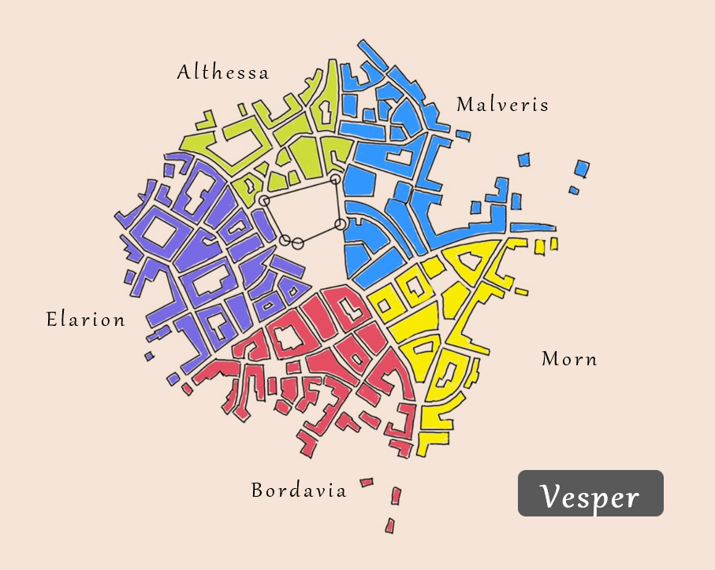

Vesper
Le origini
La città è rinata dopo la rivoluzione che ha portato alla caduta dei Kusumo, una famiglia di changeling che si è stabilita nella regione e ha fondato il suo impero. Durante il loro regno, abitanti di diverse zone del mondo sono stati attratti dalla città e dalle promesse di ricchezza della famiglia, finchè non si sono destati sospetti: chi entrava la città non ne usciva e perdeva completamente i contatti con l'esterno.
Circa 10 anni fa, un gruppo di avventurieri ha organizzato un attacco alla fortezza, catturando e uccidendo i Kusomo e liberando Vesper dall'incanto che tratteneva i suoi cittadini. Una volta fuori dall'influenza dei Kusomo, gli abitanti si ritrovarono confusi e senza memoria degli anni passati a Vesper e molti di loro morti e intrappolati nella rete di tunnel e dungeon che si dirama dalla città e che crollò poco dopo l'attacco.
La città fu ricostruita e abitata da coloro che non avevano più una casa in cui tornare, portando inizialmente alla creazione di 5 quartieri gestiti da gilde e poi all'elezione di un rappresentante per ogni quartiere per guidare la città.
Descrizione

Vesper si sviluppa intorno alle rovine del castello dei Kusomo, ormai diventato piazza principale e sede del nuovo governo, e si divide in 5 quartieri:
- Elarion: sede della gilda degli artisti
- Bordavia: sede della gilda degli artigiani e zona commerciale
- Morn: sede della gilda di ladri e mercenari e area più malfamata
- Malveris: sede della gilda degli esploratori e difensori della città
- Althessa: centro accademico della città